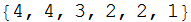
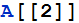
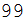
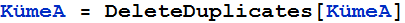
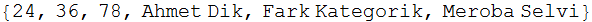
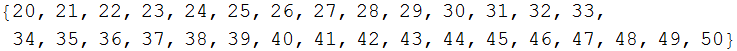
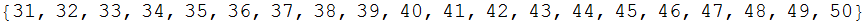

c1t3 - Uygulamalar
Mathematica Uygulamaları
Mathematica uygulamalarımızda ayrıcalıklı bir yere sahip olacak, çünkü tüm ders notlarımız Mathematica da yazılmaktadır. Bu nedenle, uygulamalar çoğu kez ders notlarından fragmanlar içerebilir. Çünkü, ders notlarından Mathematica ‘ya veri aktarımı çok kolay olmaktadır.
Mathematica Hakkında,
Mathematica, yaklaşık 1988 yılında matematikçi Steven Wolfram tarafından yaratılarak kullanıma sunulmuş bir Bilgisayar Cebir Sistemi (Computer Algebra System - CAS) dır. Günümüzün en gelişmiş CAS sistemidir. Uygulamalarımız, Wolfram Matematica’nın son sürümü olan, 10.2 sürümünde hazırlanmıştır. Bu uygulamanın masaüstü sürümü, öğrenciler için bile uuz denemeyecek bir fiyata sahip olduğundan, öğrenciler ücretsiz Wolfram Alfa ve Mathics sitelerinden yararlanabilirler. Wolfram Alpha, notebook infrastructure’ünü sağlamadığı için sınırlı bir kullanım alanı bulunmakta, fakat abone olunduğunda, ara işlemleri de görüntüyerek çözümün daha kolay anlaşılmasına olanak sağlamaktadır. Mathematica online sitesi, abone olanlar için tüm Mathematica’nın kullanımına olanak sağlamaktadır. Fakat, ara işlemlerin görüntülenme olanağı yoktur. Web üzerinde Mathematica (Mathematica online sitesi) uygulaması, rahat ve kullanımı kolay bir atmosferde yürümekte olup, elde edilen fayda, ödenen az bir ücrete değmektedir.
Mathematica Küme işlemlerinin Yürütülmesi,
Kümelerin Oluşturulması
Mathematica, doğrudan küme tanımlanabilmesine olanak sağlamaz. Lümeler, Mathematica ‘nın esas agregasyon (topluluk) Tanımı olan List (liste)’ler yoluyla gerçekleşir. Mathematica her kümeyi bir sıralı liste olarak kabul eder ve liste yöntemlerinin uygulanmasına olanak sağlar. Bazı liste öntanımlı fonksiyonları ise, küme işlemlerini tam olarak sağlar.
Mathematica listeleri, aynı elemanın birden fazla kullanılmasına olanak sağlar. Bu nedenle, Mthematica listelerindde aynı elemanın sadece bir kez kullanılabilmesinin sağlanması için, DeleteDuplicates[x] fonksiyonu kullanılır. Burada x herhangibir Mathematica listesidir. Örnek olarak,

Burada A isimli bir Mathematica listesi yaratılmıştır. Bu listenin kümeye dönüştürülmesi,
işlemi ile gerçekleştirilir. Bu işem , rekürsif, yani işlem tamamlandığında, ana tanımın değiştiği bir bilgisayar bildirimi (statement) dir. Bu bildirim, A ile tanımlanmış, yani önceden yaratılıp A ismi ile erişilebilen bir bellek alanında saklanmış olan, liste yapısındaki bir veri agregatının, DeleteDuplicates[x] öntanımlı fonksiyonun, x argümanı yerine kullanılarak işlem sonucunda oluşan listenin yine A ile tanımlanan bellek alanında saklanmasını belirtmektedir. Bu bir yokedici atama işlemidir ve işlemden önce A bellek alanında saklanmış olan veriler, işlemden sonra silinerek, yerini yeni verilere bırakmakta ve eski veri erişilmez olmaktadır. Atama işlemleri, bu sitedeki, Ada, Java, Javascript, Python programlama dilleri kurslarında detaylı olarak ele alınmıştır. Daha fazla bilgi için, bu sayfaların okunması uygun olacaktır. Fazladan elemanların silnmesi ile, A listesi bir küme haline gelmiş olmaktadır.
Elle atanmış her listenin, DeleteDuplicates[x] öntanımlı fonksiyonun uygulanması ile fazlalık olan elemanlarının ayıklanması gerekli olmayabilir. İstendiğinde, küçük ve kolay izlenebilir listelerde, fazladan yerleştirilmiş bibirine eşit elemanlar silinerek, liste, küme haline getirilebilir. Yine de kolaylıkla ve güvenli olarak, bu işin gerçekleştirilebilmesi için, DeleteDuplicates[x] öntanımlı fonksiyonunun uygulanması sağlık verilir.
Mathematica kümeleri, sıralı listelerdir. En kolay kümeler, n sayısına kadar 1,2..n doğal sayılar, pozitif tam sayılar) sekansıdır.
Bu listelerin en kolay oluşturulması, Range[] fonksiyonunun uygulanması ile gerçekleştirilebilir. Bu fonksiyon
Range[ilk eleman, son eleman, adım aralığı]
şeklinde uygulanır. Argümanlarının hepsinin kullanılması gerekli değildir.
Range[5], listeyi son eleman 5 olacak şekilde düzenler. Bu ifade,
A = {x | 1 , 2 , ...5}
veya,
A = {x | 1 < x ≤ 5}
tanımlarına eşdeğerdir.

Başlangıç ve sonuç elemanlarının belirtilmesi,
A = {x | başlangıç elemanı < x ≤ sonuç elemanı}

Adım aralığı son argüman olarak belirtilebilir.
Oluşan küme,
P = {x | x = 2 , 4 , ... , 12}
veya
P = {x | 2 < x ≤ 12 , x/2 = m (m ∈ N) , (çift sayı elemanlar)}
tanımına uygun olacaktır
şeklinde belirtilebilir. Burada, n sayısının 2 den 12 e kadar değişeceği, ilk elemanın 2, ikinci elemanın, yarısının bir doğal sayı olan ve ikiden büyük ikinci doğal sayı, yani 4, son elemanın 12 olacağı belirtilmektedir. Sekans tanımı, ardışık elemanların hesaplanmasına olanak veren her türlü formülasyon ile belirtilebilir. Bu formülasyonların belirlenmesinin her zaman olanağı olmadığından daha az kullanılır.
Listelerin kümeye dönüştülmesi, listelerin birleşimlerini veren Union[x,[y...n] fonksiyonun uygulanması ile de gerçekleştirilebilir. Bu tanım, bir bilgisayar tanımıdır. Union öntanımlı fonksiyonunun en az bir, isteğe bağlı olarak da iki veya daha fazla liste verisi argümanı ile uygulanabileceğini belirtir. Tek argüman ile kullanıldığında, argümanı olan listenin, birbirinin aynı olan elemanlardan sadece bir tanesini içerecek şekilde ve sıralı olarak, oluşturduğu bir kümeyi geri döndürür. Örnek olarak,

Eğer kendi üstüne atanmamışsa, atama yokedici olmaz ve B listesinin değeri değişmez. Union[B] işleminin sonucu da bir değişkene atanmadığı için (değişken adı ile işaretlenmiş bir bellek alanına yerleştirilmediği için) erişilmez olarak kalır. B yi çağıralım,
değişmemiş olarak kalmış olduğu görülüyor. İşlemi yokedici atama ile gerçekleştirirsek,


şeklinde bir sıralanmış küme elde edilir. Küme elemanların sırası, küme kimliğinde önemi olmadığından, eldilen kümenin, DeleteDuplicates[B], fonksiyonu ile elde edilecek kümenin aynı olacağı görülür. Tek argümanlı Union[] fonksiyonu, hem DeleteDuplicates[], hem de Sort[] fonksiyonlarının birlikte uygulanması sonucunda oluşan bir suralı küme değeri döndürmektedir. Geri döndürülen kümenin sıralı olacağı kesindir, fakat bu sıralamanın istediğiniz yönde gerçekleşeceğinin bir garantisi yoktur. Tam aksine istediğimiz yönde olmamasının olasılığı daha yüksektir. Çünkü, bir kümenin elemanları, sayılar, isimler, başka kümeler olabilir. Bunların sıralama yöntemleri çok değişik olabilir. Mathematica bu kümeleri kendi programı uyarınca sıralamaktadır. Bu yöntem, sıralama işlemini istediğimiz yönde gerçekleştirmeyebilir. Yine de, sıralanmış bir kümenin elemanları, ne şekilde sıralanırsa sıralansın, sıralanmamış bir kümeye göre daha kolay izlenebilecektir. Ayrıca, aynı yönteme göre sıralanmış iki küme incelendiğinde, eşit olup olmadıkları daha kolay gözlenebilecektir. Mathematica Sort[] fonksiyonu, Sort[x,yöntem] bildirimi şeklinde uygulanır. Sort[x] şeklinde bir bildirim, x listesini, kanonik (kanunî = yasal) sıraya göre sıralar. Mathematica yasal sırası küçükten büyüğe doğrudur.
Büyükten küçüğe doğru sıralama yöntemi, Greater yönteminin belirtilmesi ile yapılabilir.

Listelerin, ilk elemanlarına göre küçükten büyüğe doğru sıralanması, varsayılan (default) sıralama yöntemidir.

Sıralama yönünü, ilk elemanı en büyük listenin en başa gelecek şekilde değiştirilmesi için,

ifadesi kullanılacaktır. Mathematica' da liste elemanlarına erişim, A[[2]] şeklinde yapılabilmektedir. Bu ifade, A listesinin (kümesinin) 2inci elemanı anlamına gelmektedir.


En büyük ikinci elemanı olan kümenin daha sonra sıralanması için,
İkinci elemanı en küçük kümenin daha sonra sıra
alacak şekilde, düzenlenmesi #1[[2]]>#2[[2]] &
bildirimi ile olur.

Mathematica sort[] fonksiyonu başka yöntemlerle de özelleştirilebilir. Bunları daha sonraya bırakabiliriz.
Union[A,B] fonksiyonu, Argümanları olan A ve B kümelerinin, sıralanmış birleşim kümesini döndürmektedir. Örnek,
(C değişken isimi, Mathematica’da saklı isim olduğundan CC ismi kullanılmıştır).
Mathematica esc un esc şeklinde yazılan ∪ sembolünü de destekler,
Geri döndülüp CC değişkenine atanmış ( CC isiminin erişim sağladığı bellek alanına yerleştirilmiş) değerin, A ve kümelerinin, sıralı birleşim kümesi olduğu açıkça görülmektedir.
Mathematica, boş küme Ø elemmanını küme tanımlarında göstermez. Örnek olarak A kümesi aslında {{}, 77, 88, 99} iken boş küme gözardı edilerek,
olarak, belirtilmektedir. Buna rağmen, boş küme Ø nin her kümenin ortak elemanı olduğu herkesin bilincinde olduğu gibi, Mathematica da bu bilgiye sahiptir. Sadece, fazla kalabalık küme tanımlarından kaçınmak için, boş küme Ø, elemanlar arasında görüntülenmez. Ama hesaplarda, varlığı her zaman gözönüne alınır.
Kümelerin Birleştirilmesi
İki veya daha fazla kümenin birleştirilmesi, Union[] hazır fonksiyonunun uygulanması ile gerçekleştirilir. Bu fonksiyonun kullanımı,
Union[liste1, liste2, ...]
şeklindedir. Eğer istenirse, esc un esc ile ∪ sembolü de kullanılabilir.

Elle girdiğimiz listenin, elemanları sıralanmıyor, fakat
iki ve daha fazla sözel veriden oluşan eleman sıralı olarak
belleğe alınıyor. Bu iki listenin önce küme olarak
belirlenmesi uygun olur.
(Aslında buna gerek yok. Aynı elemanı çok kez içermeyen
listeler, zaten kümedir).



Birleşim kümesi, sıralı bir küme olarak oluşturuyor. Her iki kümede ortak olan 24 ve 36 elemanları, birleşim kümesinde tek bir eleman olarak yer bulabiliyor. İşlem, küme kuramlarına uygun bir şekilde yürütülüyor.
BirleşimKümesi = {x | (x ∈ KümeA) ∨ (x ∈ KümeB)}
Birleşim kümesinin elemanları, hem KümeA, hem de KümeB de olan tüm elemanlardan oluşmaktadır. (Küme tanımı gereği, her iki kümede ortak olan elemanlardan sadece birisi, birleşim kümesinin bir elemanı olabilir. Boş küme Ø = {} her kümenin olduğu gibi, birleşim kümesinin de bir elemanıdır, fakat listenin kalabalık olmaması için görüntülenmeyebilir. Burada da görüntülenmemektedir. Ama, birleşim kümesinde bir eleman olarak boş küme de bulunmaktadır ve bu gerçek hiçbir zaman gözardı edilmemelidir.
Kümelerin Kesişimi
İki veya daha fazla kümenin birleştirilmesi, Intersection[] hazır fonksiyonunun uygulanması ile gerçekleştirilir. Bu fonksiyonun kullanımı,
Intersection[liste1, liste2, ...]
şeklindedir. Eğer istenirse, esc inter esc ile ∩ sembolü de kullanılabilir.

veya,
KümeA ve KümeB gibi iki kümenin kesişim kümesi,
KesişimKümesi = {x | (x ∈ KümeA) ∧ (x ∈ KümeB)}
olduğundan, yani kesişim kümesinin elemanlarının tüm kesişen kümelerin ortak elemanlarından oluşması gerektiğinden, elde edilen sonuç, kesişen kümeler tanımına uygundur. Doğal olarak kesişim kümesinin bir elemanı olan, fakat görüntülenmeyen boş kümenin de elemanlar arasında olduğu unutulmamalıdır.
Bir kümenin evrensel küme (universal set) den fark kümesine, bu kümenin (evrensel kümeye) tümleyicisi adı verilir. Evrensel küme çoğunlukla U olarak adlandırılır. Mathematica’da U bir saklı sözcük (reserved word) olduğundan, evrensel küme EK olarak adlandırılmıştır. Tümleyicinin tanımı
Kompleman_A = {x ∈ EK | x ∉ A}
Bir Kümenin Kuvvet Kümeleri
Bir kümenin elemanları ile, oluşturulabilecek tüm alt
kümeleri eleman olarak içeren bir küme, “Kuvvet Kümesi”
(Power Set) olarak adlandırılır. Bir kümenin kuvvet kümesinin
elemanlarının sayısı, boş küme Ø dışındaki
eleman sayısı n ise,
 Bu sayıya boş küme Ø
dahildir. Bu durumda, bir kümenin kuvvet kümesi,
- 1 elle tutulur gerçek
elemandan oluşacaktır.
Bu sayıya boş küme Ø
dahildir. Bu durumda, bir kümenin kuvvet kümesi,
- 1 elle tutulur gerçek
elemandan oluşacaktır.
Mathematica’da kuvvet kümesi,
Subsets[x]
fonksiyonu ile oluşturulmaktadır. Burada x, Mathematica’da önceden tanımlanmış ve A ile erişilen bellek alanına yerleştirilmiş bir kümedir. Örnek
Bir kümenin uzunluğu, küme elemanlarının sayısıdır.
Mathematica’da, listelerin
(dolayısı ile küme haline getirilmiş listelerin) uzunluklarının ölçülmesi
için, Length[x] hazır fonksiyonu kullanılır. Burada
x herhangibir listedir. POW kümesinin uzunluğunu ölçerek,
gerçekten
 ya eşit olup olmadığını
sınayalım:
ya eşit olup olmadığını
sınayalım:

Uygulama sonucunda, Mathematica’nın bir kümenin, kuvvet kümelerini doğru olarak hesapladığı görülmektedir.
Mathematica Length[] fonksiyonu, kümelerin eşitliklerinin sınanması için kullanılamaz. Bunun nedeni, kümelerin küme elemanları, tek bir eleman sayılırlar. Kümelerden her ikisinde, birer küme elemanı varsa ve bu kümeler birbirlerinden farklı iseler, Mathematica Length[] fonksiyonları her iki kümenin boyunun aynı olduğunu belirtir. Oysa kümelerin, küme olan elemanları birbirlerinden farklı olabilir. Bu nedenle, Length[A] ile Length[B] aynı olabilmesine karşın A ve B kümeleri eşit olmayabilir. Örnek,

Kümelerin Mathematica ile başlangıç uygulamaları için yeterli bilgiyi oluşturmuş durumdayız. Artık uygulamalara geçebiliriz.
Uygulama 1

olarak iki küme verilmiştir. Bu iki kümenin eşit kümeler olduğunu belirleyiniz.
Çözüm
Eğer iki liste eşit listeler ise, (elemanları birbirinin aynı) Equal[liste1,liste2] fonksiyonu geriye “True” (Doğru), eşit değilse, ”False” (Yanlış) döndürür. Deneyelim,

veya,

Burada kullanılan == işlemcisi mantıksal eşit (karşılaştırma) işlemcisidir. Bu işlemci diyadik (iki işlenenli) bir işlemci olup sağ işlenen, sol işlenene eşit ise sonuç “True” (Doğru) aksi halde “False” değerini döndürür.
Sonuç kesin fakat yöntem belirsizdir. Çoğu bilgisayarlı çözüm sistemlerinin sorunu budur. Hazır fonksiyonların çalışma yöntemleri, kullanıcıya açık değildir.
Bu fonksiyon, kümelerin elemanlarını, karşılıklı olarak inceleyip eşitsizlik bulunca "False", aksi halde "True" mesajını verebilir. Bunun için, ilk kümenin ilk elemanı, ikinci kümenin tüm elemanları ile karşılaştırılır. Eğer ikinci küme elemanları arasında, birinci kümenin ilk elemanına eşit bir eleman bulunmazsa, iki küme birbirine eşit değildir ve "False" sonucu döndürülerek işlem sona erdirilir. Uyuşma (match) bulunduğunda, birinci kümenin bir sonraki elemanı, ikinci kümenin tüm elemanları ile karşılaştırılır ve bu işlem, birinci kümenin tüm elemanları tamamlanıncaya kadar devam eder. Sonuçta hiç uyuşmazlık bulunmazsa (hep uyuşma bulunursa), sonuç "True" olarak döndürülür.
Bu fonksiyon, bir başka yöntem olan, “eğer iki kümenin karşılıklı olarak oluşturulan (A kümesi B kümesinin alt kümesi ve B kümesi A kümesinin alt kümesi) alt kümelerinin kesişim kümesi, kesişen kümelerden birine eşit ise, o iki küme birbirine eşittir” prensibinden de yararlanmış olabilir. Bunun anlamı,
sadece ve sadece (A ⊆ B) ∧ (B ⊆ A) = A olduğunda, A = B olur, şeklindedir.
Özalt küme olmayan tek alt küme, kümenin kendisidir. Buna dayanarak,

sonucunu verdiğinden, A ve B kümelerinin eşit kümeler olduklarına karar verilir.
Eğer A==B gibi basit ve kesin olarak, eşitliği doğrulama yöntemi varsa ve bu yöntem doğru sonuç veriyorsa, doğal olarak daha karmaşık yöntemlerin uygulanmasına gerek kalmaz. Yine de, A==B algoritmasının çalışma yöntemi, yani hangi fonksiyonların çağrılıp, sonuca nasıl ulaşıldığı bilgisi, kullanıcı tarafından ulaşılabilir değildir. Kullanıcı için bu bilgi hiç önemli değilse, yani algoritma doğru çalıştıktan sonra, nasıl çalıştığı kullanıcının umurunda bile değil ise, bu yöntemi kullanabilir. Oysa, A∩B==A algoritmasının nasıl çalıştığı, bellidir. Bu yöntemde, önce A ve B kümelerinin kesişme kümesi oluşturulmaktadır. Kesişme kümesinde, A ve B kümelerinde ortak olan elemanlar bulunacaktır. Eşit kümelerin her elemanı ortak olduğundan, kesişme kümeleri de her iki kümeye eşit olmalıdır. Bu yöntem, sonucun nasıl alınığı belli olan bir yöntemdir ve yazılımı kapalı olan bir yönteme her zaman yeğ tutulmalıdır.
Çözüm Sonu
Uygulama 2
Aşağıda görülen kümelerin eleman sayılarını ve eşit kümeler olup olmadıklarını saptayınız.
Bu fonksiyon, A ve B değişkenlerine önceden atanmış değerleri temizleyerek, yeni atamanın sağlıklı olmasını sağlar. Kullanılması iyi bir yöntemdir.
İfadenin sonuna semikolon (;) konulduğundan, işlem gerçekleşmiş fakat sonuç görüntülenmemiştir.
Çözüm
Bu sonuç, iki kümenin eşit kümeler olmadığını kesin olarak belirtmektedir. Bu sonuca, bilgisayar kullanımı olmadan ulaşmak kolay değildir. Bu iki kümenin birbirlerine eşit veya eşit olmadığının bilgisayar kullanılmadan araştırılması, uzun ömür bol sabır isteyen bir Danaides çalışmasıdır. Danaides’les Tanrı Zeus tarafından, dipsiz kova ile su taşımaya mahkûm edilmişlerdir. Bu işlem de böyledir. Oysa, uygun bir program bulunur ve güçlü bir bilgisayarda çalıştırılırsa, çözüm saniyeler içinde elde edilebilmektedir.
Bu örnek, bilgisayar kullanımın gerekli olduğunun bir kanıtıdır. Bilgisayar bir çalışan at, (work horse) gibi, elle yapılması adeta olanaksız gibi görülen, işlem yoğun yöntemlerin çözümü için kesinlikle gereklidir. Fakat, yapabildiği işler sadece işlem gücü sağlamak değildir. Mathematica, Mathcad, Matlab gibi bilgisayarla cebir uygulama sistemleri, sembolik çalışmalarla, cebirsel ifadelerin çözümleri, denklem çözümleri, grafik çizimi gibi, çok önemli konularda, olmazsa olmaz denilecek kadar büyük öneme sahiptir.
Bazı matematik öğretmenlerinin, matematik çalışmalarında, öğrencileri bilgisayarlardan uzak tutma çabaları, herkesin tableti olduğu bu modern çağlarda sonuçsuz kalmıştır. Çağımızın büyük matematikçisi David Hilbert matematikte, bilgisayar kullanımına büyük önem vermiş, ve matematiği bir bilgisayar programı olarak tanımlamaya çalışmıştır. Günümüzde, insanlığın eriştiği bu büyük bilgi düzeyinde, matematiğin bilgisayarlar yardımı uygulanmasına karşı olanlar, kesinlikle çağımızı anlayamamış olanlardır.
Yukarıdaki örnek, matematiğin bilgisayar ile uygulanmasını amacı ile oluşturulmuş Mathematica gibi programların, matematik için yardımcı, fakat öğretici olmadığını da açıklamaktadır. Bilgisayarda uygulanan matematik, ancak konu ile ilgili kuramsal bilgisi olan kullanıcılara deneyim kazandırabilmektedir. Bilgisayar kullanımı ile matematik öğrenimi, ancak tasarımı bu amaçla yapılmış programlar ile gerçekleştirilebilir. Günümüzde, bu amaca uygun yetkin programlar yoktur. Bu nedenle, dersler kağıt-kalem ile klasik olarak, uygulamalar ise, modern bilgisayar uygulama programlarında yapılarak, eskiye göre çok daha hızlı ve etkili bir öğrenim sağlanabilmektedir. Bu çalışmada da uygulanan yöntem budur.
Çözüm Sonu
Uygulama 3
Yukarıda verilmiş olan A kümesi, evrensel küme olarak kabul edilip, B kümesinin A kümesine göre tümleyicisini (komplemanını) bulunuz.
Çözüm
Sağlama:
Kesinlikle elle yapılamayacak bir uygulama !
Çözüm Sonu
Uygulama 4
Yukarıda verilmiş olan A kümesi, evrensel küme olarak
kabul edilip, B kümesinin A kümesine göre tümleyicisi
bellekte yerleşik KOMP kümesi olduğunu göre, CC = KOMP
+ B olarak tanımlanan CC kümesinin A kümesi ile eşit olp
olmadığını kontrol ediniz.
Not: Mathematica da C bir saklı
sözcük olarak belirlenmiştir. Eğer saklı sözcükler
yeniden tanımlanırlarsa, ön tanımlı işlevlerinden
yoksun kalırlar. Bu nedenle, yeni değişken CC olarak tanımlanmış
ve C saklı sözcüğünün işlevini üstünde
tutması sağlanmıştır.
Çözüm
Mathematica ve kümeleri destekleyen başka CAS sistemleri için çok kolay, el ile çok zor hatta olanaksız.

Her iki kümenin eşit kümeler olduğu saptanıyor. CAS sistemlerinin çözüm değil, çözüm desteği sağladıklarına dikkat ediniz.
Çözüm Sonu
Uygulama 4
Aşağıda, evrensel küme EK ile, AA ve BB kümeleri verilmiştir. Bu kümelerde , De Morgan yasalarının geçerli olup olmadığını saptayınız.


Çözüm
De Morgan yasalarının kanıtlamasını yapmıştık. Bu yüzden bu yasalar artık, evrensel olarak geçerli bağıntı niteliğindedirler. Bu yasaların belirli bir örnek için sağlanıp sağlanmadığının saptanması Mathematica gibi yetkin bir CAS sistemi için çok kolaydır.
Yasaların sınanması için, önce her iki kümenin evrensel kümeye tümleyicilerini belirleyelim.

I nci De Morgan Yasası
Bu örnek için, I inci De Morgan yasası doğrulanmış olmaktadır.
II nci De Morgan Yasası

Bu örnek için, II inci De Morgan yasası da doğrulanmış olmaktadır.
Çözüm Sonu
Uygulama 5
Aşağıdaki kümeler tanımlanarak,
bu örnekte, kümelerde birleşimin kesişme üzerine ve kesişmenin birleşim üzerine, dağılma özelliklerini sağlayıp sağlamadığını saptayınız.
Çözüm
Bu örnekte, birleşimin kesişme üzerine dağılımının Mathematica ile saptanması,

ile yapılır. Karşılaştırma sonucunda her iki ifadenin aynı sonucu verdiği doğrulandığından, bu örnek için, birleşimin kesişme üzerine dağılımının sağlandığı saptanmış olur.
Bu örnekte, kesişmenin birleşim üzerine dağılımının Mathematica ile saptanması,

ile yapılır. Karşılaştırma sonucunda her iki ifadenin aynı sonucu verdiği doğrulandığından, bu örnek için, kesişmenin birleşim üzerine dağılımının sağlandığı saptanmış olur.
Bu örnekte kümelerin dağılım özelliklerinin doğrulanması, tüm küme örneklerinde dağılım özelliğinin destekleneceği anlamına gelmez. Bunun için kümelerin dağılım özelliklerinin, tümevarımsal yöntemle kanıtlanması gerekir.
Kümelerin birleşmesinin kesişme üzerine dağılımının, tümevarımsal yöntemle kanıtlanması için, U5A ∪ (U5B ∩ U5C) kümesinden, gelişigüzel bir elemanın , aynı zamanda, (U5A ∪ U5B) ∩ (U5A ∪U5C) kümesinin de bir elemanı olduğunu kanıtlamak gerekiyor.
U5A ∪ (U5B ∩ U5C) kümesinden, gelişigüzel bir elemanı ele alalım. Bu eleman ya U5A ya da U5B ∩ U5C kümesindedir.
Eğer U5A kümesinde ise, o zaman ikinci tarafta oluşan kümenin de kesinlikle bir elemanıdır ve kanıt tamamlanmış olur.
Eğer U5A kümesinde değilse, o zaman U5B ∩ U5C kesişim kümesindedir. Bu durumda, hem U5B hem de U5C kümelerinin ortak bir elemanı olması gerekir. O zaman da, yine ikinci taraftaki,(U5A ∪ U5B) ∩ (U5A ∪ U5C) kümesinin bir elemanı olması gerekir. Çünkü bir elemanın ikinci taraftaki kümenin elemanı olması için, U5B ve U5C kümelerinin ortak elemanı olması gerekir. Kanıt bu durumda da tamamlanmış olduğundan, başka olasılık kalmaz ve tüm kümelerde, birleşmenin kesişme üzerine dağılım özelliği olduğu kanıtlanmış olur.
Kesişmenin birleşim üzerinde dağılma özelliği olduğunun kanıtlanması için, önce ikinci taraftan başlayalım. İkinci tafataki küme elemanları, U5A nın hem U5B, Hem de U5C ile ortak elemanlarının kümesidir. Birinci taraftaki küme elemanları ise, U5A’nın hem U5B, hem de U5C ile ortak elemanlarının kümesidir. Demek her iki taraftaki kümeler eşit kümelerdir ve böylece, kesişmenin birleşim üzerinde dağılma özelliği olduğu kanıtlanmış olmaktadır.
Çözüm Sonu
Uygulama 6
Uygulama 4 de, evrensel küme EK ile, AA kümelerinin tanımları yapılmıştır. Bu kümelerde tümleme (complementation) kuralları olan,
AA ∪ AA’ = EK
ve
AA ∩ AA’ = Ø
bağıntılarını kanıtlayınız ve bu örnekte geçerli olduklarını doğrulayınız.
Çözüm
İlk tümleme kuralında sol taraf, AA + EK - AA = EK anlamına geldiğinden, EK kümesine eşittir ve bu da kanıtı sağlamaktadır.
İkinci bağıntıda ise, bir kümenin, herhangibir evrensel küme ile kendisinin kesişiminin ortak elemanları olamayağına göre, kesişimlerin boş küme Ø olacağını belirtir. Bu da kanıtı sağlamaktadır.
Bağıntıların, evrensel matematik gerçek (teorem) oldukları kanıtlandığından her örnekte sağlanacakları kuşkusuzdur. Yine de elimizdeki örnek kümelerle bu bağıntıları sınayalım.

Çözüm Sonu
Uygulama 7
Uygulama 4 de, evrensel küme EK ile, AA kümelerinin tanımları yapılmıştır. AA kümesinde, kendi kendinin tersi olmak (self - Inverse) özelliği,
(A’)’ = A
bağıntısını kuramsal olarak kanıtlayınız ve sayısal uygulamasını yapınız.
Çözüm
Self-Inverse özelliği, EK - (EK - A) = EK - EK + A = A anlamına geldiğinden kanıtlanmaktadır. Sayısal olarak sınanması,
olarak doğrulanır.
Çözüm Sonu
Uygulama 8
Uygulama 4 de, AA ve BB kümelerinin tanımları yapılmıştır. Bu kümelerde, AA kümesinin BB kümesi tarafından yutulması,
AA ⊆ (AA ∪ BB)
şeklinde belirtilir. Yutulma olayını açıklayınız.
Çözüm
AA kümesinin, AA ve BB kümelerinin birleşimin alt kümesi olacağı kuşkusuzdur. AA kümesinin elemanları, BB kümesinin niteliğine göre, AA ∪ BB kümesinden az veya eşit olabilir.
Herşeyden önce,
AA ⊆ (AA ∪ BB)
ifadesinin anlamını iyice düşünelim. Bu ifade, AA kümesinde bulunan tüm elemanların, AA ve BB kümelerinin birleşiminde bulunacağını belirtiyor. Küme birleşiminin tanımı gereğince, iki kümenin birleşim kümesinde, kümelerin her birinin tüm elemanlarının bulunması gerekir. Dolayısı ile bu birleşim kümesi AA kümesinin tüm elemanlarını içeren ve öz alt küme olmayan bir kümedir.
Bu ifade, AA ∪ BB birleşim kümesinin uzunluğu üzerinde hiçbir bilgi içermiyor. Bu konuda, iki olasılık olabilir. İlk olasılık BB kümesinin AA kümesi elemanlarından farklı elemanalar içermesidir. Bu durumda, AA kümesinin eleman sayısı (küme uzunluğu) birleşim kümesinden daha az olacaktır. Birleşim kümesinde hem AA kümesinin tüm elemanları vw BB kümesinin tüm elemanalrı bulunacak, AA kümesinin tüm elemanaları, birleşim kümesinde de bulunacağından, AA dizisi, birleşim dizisi tarafından yutulacak (absorbe edilecektir).
İkinci ve son olasılık BB kümesinin, AA kümesinin eşit kümesi olmasıdır. Bu durumda, AA ve BB kümelerinin birleşim kümesi hem AA hem de BB ye eşit olacak, kümelerin eşitliği için gereekli ve yeterli koşul gerçekleşmiş olacaktır. Kümelerin eşitliği için gerekli ve yeterli koşul,
AA ⊆ BB ve BB ⊆ AA
olmasıdır. Bu ifadeler iki yönlü koşul belirten eşdeğerlik ifadesidir.
Eğer AA = BB ise, (AA ⊆ BB) ∧ (BB ⊆ AA) olur. AA = BB olması, (AA ⊆ BB) ∧ (BB ⊆ AA) olması için yeterli koşuldur (Başka yeterlikler de olabilir). (AA ⊆ BB) ∧ (BB ⊆ AA) olması, AA = BB olması için gerekli koşuldur (Başka gereklikler de olabilir). Matematik olarak,
(AA = BB) ⇒ (AA ⊆ BB) ∧ (BB ⊆ AA)
olarak belirtilir. Ters yönde,
Eğer (AA ⊆ BB) ∧ (BB ⊆ AA) ise, AA = BB olur. (AA ⊆ BB) ∧ (BB ⊆ AA) olması, AA = BB olması için yeterli koşuldur (Başka yeterlikler de olabilir). AA = BB olması, (AA ⊆ BB) ∧ (BB ⊆ AA) olması için gerekli koşuldur (Başka gereklikler de olabilir). Matematik olarak,
(AA ⊆ BB) ∧ (BB ⊆ AA) ⇒ (AA = BB)
olarak belirtilir. Her iki yöndeki koşullu ifadeler sağlanabiliyorsa, eşdeğerlik ifadesi oluşur. Eşdeğerlik ifadesi,
(AA = BB) ⇔ (AA ⊆ BB) ∧ (BB ⊆ AA)
olarak belirtilir. Eşdeğerlik ifadesi, “AA = BB ile (AA ⊆
BB) ∧ (BB ⊆ AA) birbirine eşdeğerdir veya AA = BB olayı
ile (AA ⊆ BB) ∧ (BB ⊆ AA) olayları birbirine eşdeğer
olaylardır” olarak konur. Bu olaylar eşdeğer olduklarından
birinin olması mutlaka diğerinin de olmasını gerektirir
ve eşdeğerlik ifadesi, “Eğer ve sadece eğer AA =
BB ise, (AA ⊆ BB) ∧ (BB ⊆ AA) dir”, veya “Eğer
ve sadece eğer (AA ⊆ BB) ∧ (BB ⊆ AA) ise, AA = BB dir”
olarak okunur. Eşdeğerlik ifadesi, aynı zamanda, “AA
= BB olması için, (AA ⊆ BB) ∧ (BB ⊆ AA) gerekli
ve yeterli koşuldur.” (ne başka yeterlik ne de başka
gereklik olamaz), şeklinde de okunabilir. Bu konuları Matematik
Mantık konusunda daha geniş olarak inceleyeceğiz. Ama, en azından şimdilik, “yeterli
ve gerekli” koşul
üzerinde bilgi sağlamış olduk.
Çözüm Sonu
Uygulama 9
Bir BB kümesinin, bir AA kümesini yutması
(AA ⊆ BB) ⇔ (AA ∪ BB = BB)
olarak açıklanır. Yutulma olayını inceleyiniz.
Çözüm
Bu olayın okunuşu, “Eğer ve sadece eğer, AA kümesi BB kümesinin öz alt küme olmayan alt kümesi ise, o zaman AA ve BB kümelerinin birleşimi BB olur” şeklindedir.
Burada AA kümesinin tüm elemanlarının BB kümesinin de elemanları olduğu belirtiliyor. AA ve BB nin farklı kümeler olmaları gerek, çünkü, BB kümesinin AA kümesine eşit olduğu belirtilmemiş. Zaten, eğer AA = BB olsaydı olay yutulma değil eşitlik haline dönüşürdü. AA ve BB nin farklı kümeler oldukları gözönüne alınırsa, AA ve BB inin birleşim kümesinin eleman sayısının (uzunluğunun), AA dan fazla olacağını, ayrıca tüm AA kümesi elemanlarının AA ve BB kümelerinin birleşim kümesinde bulunacağını, birleşim kümesinin de BB kümesine eşit olacağı gözönüne alınırsa, AA kümesinin BB kümesi tarafından yutulmuş olduğu söylenebilir.
Çözüm Sonu
Uygulama 10
Kümelerin tekgüçlü (idempotans) özellikleri, aşağıda olduğu gibi tanımlanır.
AA ∪ AA = AA
Bu özelliği açıklayınız.
Çözüm
Tekgüçlü işlem, Bir birleşme işlemidir. Birleşim kümesi, her iki birleşen kümenin de tüm elemanlarını içerecektir. Burada bir kümenin kendi kendisi ile birleşiminin sonucu belirtilmektedir. Küme tanımı gereğince, her kümede aynı elemandan sadece bir tane olabileceğinden, bir kümenin kendisi ile birleşmesi sonucunda oluşacak birleşme kümesi, kendisi ile aynı küme olmalıdır.
Çözüm Sonu
Uygulama 11
Mathematica ile ilk 100 asal sayının listesini alınız.
Çözüm
Mathematica bunun için hazır bir fonksiyon sağlamaz. Yapılan bir çalışmada bunun için,
fonksiyonu oluşturulmuştur.
Çözüm Sonu
Uygulama 11
Mathematica ile bir sayının asallığını saptayınız.
Çözüm
Mathematica bunun için hazır bir fonksiyon sağlar.
71568 asal sayı değilmiş. Bunun saptanması, el ile yapıldığında uzun sürebilecek bir süreçtir.
Çözüm Sonu
Uygulama 11
Mathematica ile 43242444 sayısının asal sayı çarpanlarını bulunuz.
Çözüm
Mathematica, FactorInteger[sayı] , hazır fonksiyonunu sağlamaktadır. Bunun uygulanması,
Değerlendirilmesi: 2tane 2, 3 tane 3, bir tane 7, bir tane 47, bir tane 1217
Sağlama:
bulunan asal sayı çarpanları gerçeği belirtmektedir.
Çözüm Sonu
Uygulama 11
Mathematica ile iki sayının aralarında asal olup olmadığını saptayınız.
Çözüm
Eğer n1 ve n2 aralarında asal iseler, CoprimeQ[n1, n2] True değillerse False sonucunu verir. CoprimeQ[n1, n2, ...] eğer her çift aralarında asal iseler True sonucunu verir.

34, 53, 89, 33 aralarında asal sayılardır (ortak asal çarpanları yoktur).
Çözüm Sonu